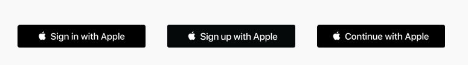
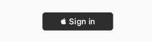
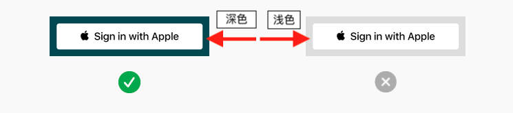
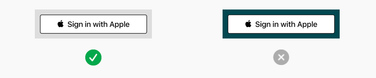
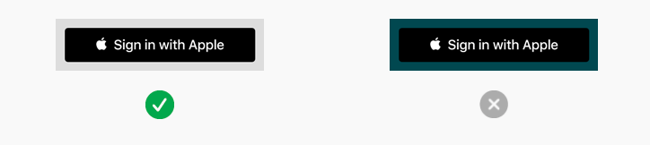
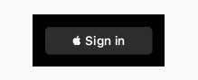
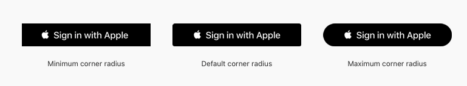
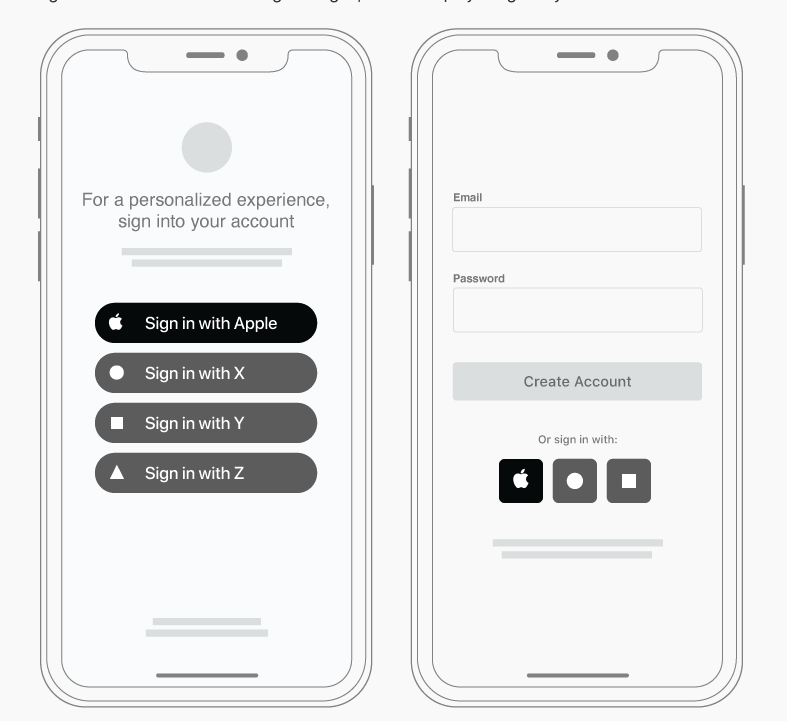
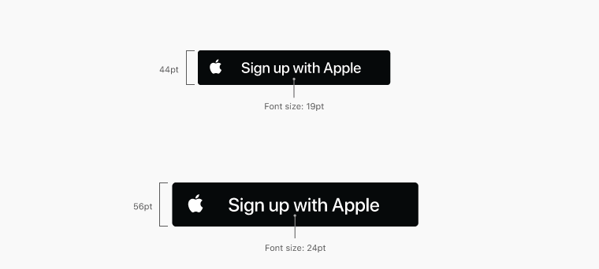
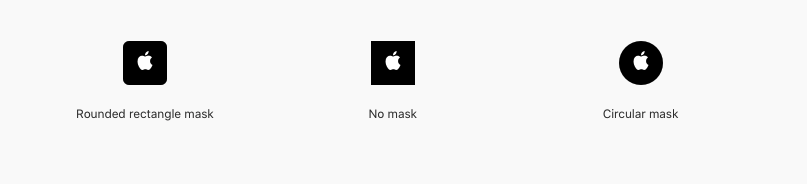

使用Apple提供的Button
当你使用系统提供的API创建Button的时候，能够获得以下优势：
- 能够确保Button使用了苹果认可的title、font、color 和 style
- 能够确保在你修改Button的Style的时候，Button的Content有一个理想的位置
- Button的title能够跟自动转换成设备手机选择的Language
- 支持配置圆角以满足你自己UI的风格（iOS、MacOS、Web）
对开发者而言，可以看这些使用引导ASAuthorizationAppleIDButton (iOS, macOS, and tvOS), WKInterfaceAuthorizationAppleIDButton (watchOS), and Displaying and Configuring Sign in with Apple Buttons (web).
系统提供的Button 的Title有几种文案。根据你使用的平台，选择最合适的文案。
下面几种Button Title都可以在iOS、macOS、和tvOS中使用，但是只有Sign in with Apple 和 Continue with Apple 可以在Web中使用

对watchOS，系统提供的Title只有一个 Sign in

依赖于不同的平台，系统提供了三种外观的Button，分别是白色（white）、有边框的白色（white with an outline）、黑色（black）。根据放置Button的背景颜色，选择最合Button样式。
白色
白色可以在任何平台使用（包括Web）,当背景是黑色或者其他深色时，选择白色会有更好的表现力

白色带边框
白色带边框的Button可以在iOS、macOS、和Web上面使用，当背景是白色或浅色背景的时候，背景和Button的填充色对比是不够强烈的，通过添加边框可以提升表现力。当背景是深色的时候，不要使用这种风格，深色会使得这种风格变得混乱。

黑色
黑色可以在任何平台使用（包括Web）,当背景是白色或者其他浅色时，选择黑色会有更好的表现力

不像其他平台上的黑色风格的Button，在watchOS上，黑色风格的Button是非全黑的填充色，和watchOS全黑色的背景做对比。watchOS上Button用系统定义的黑灰样式。

Button的大小和圆角
调整Button的圆角以匹配App中其他登录Button的风格。默认情况下， Sign in with Apple的Button是没有圆角的。在iOS、macOS、Web中，可以通过修改圆角的半径，生成直角或者药丸状的Button。

iOS、macOS 、Web中使用的Button，必须有一个最小的的Size和外边距。值得注意的是，依赖于文本的本地化，Button的长度或许很长。下面的值可以做作为设计原则：
| Minimum width | Minimum height | Minimum margin |
|---|---|---|
| 140pt (140px @1x, 280px @2x) | 30pt (30px @1x, 60px @2x) | 1/10 of the button’s height |
创建一个自定义的 Sign in with Apple Button
如果你有需要的话，可以在iOS、macOS、或者Web平台上自己创建一个自定义的Sign in with Apple Button 。比如：或许你支持多种登录方式，你想展示Left-Aligned Logo Button或者Logo-Only Button。

Apple Design Resources 提供了一些美术资源，你可以使用这些美术资源自定义Sign in with Apple Button。这些资源包括PNG、SVG和PDF三种格式，并且包含黑白两种表现形式。下面是Logo-Only Button的两个例子，每个Logo都添加了富有表现力的背景色
所有下载的Logo文件都包含一个内边距，这样在Button中放置logo更加容易
Left-Aligned Logo文件包含一个垂直方向上的内边距，能够确保Logo在Button中有一个合适的占比，水平方向上的内边距也为Logo和Button的左边距、Logo和Button的title之间提供了一个最小边距。Logo-Only文件包含一个水平和垂直方向上的内边距，确保了Logo在Button中有一个合适的占比
使用Logo-Only文件的时候,需要遵循以下原则：
- 不要仅仅使用 Apple Logo 自己作为一个Button
- Logo文件的高度要和Button的高度保持一致
- 不要剪切Logo文件
- 不要添加垂直方向的内边距
- Logo文件不要使用自己定义的颜色
Left-Aligned Logo Buttons
根据你的Button的高度选择合适的Logo文件。因为PDF和SVG是矢量图，你可以在任何高度的Button中使用这两种文件。而PNG文件只能在高度为44的Button中使用，这是iOS中Button的默认高度。
Title要使用系统字体(Sign in with Apple、Sign up with Apple、 Continue with Apple)：为了统一，你自定义的Button的高度和Title应该和系统使用的保持一样的比例。Title应该占据Button高度的43%，换言之Button的高度应该是Title Font大小的233%。下面两个例子展示了这种比例：

保持Title的大写的风格所有Title的首字母都是大写的（Sign or Continue — and Apple），其他的字母是小写的。切不可改变这种风格。
保持Title和Logo和Button在垂直方向上对齐：为了做到这一点，Title和Button的中部在垂直方向上对齐，然后添加Logo图片，确保图片的高度和Button的高度一致。因为Logo图片本身具有顶部和底部的内边距，垂直对齐Button的Title能够确保Title和Logo在Button中占据合适的比例。
如果有需要可以嵌入Logo 如果你需要将苹果的Logo和其他的认证的logo对齐，可以将Logo左侧嵌入
Title和Button的右边有一个最小内边距 边距至少占据Button宽度的8%
Button有一个最小的size，且Button有一个内边距 ：因为文本的本地化，Button的长度可能很长。参考下面的设计原则：
| Minimum width | Minimum height | Minimum margin |
|---|---|---|
| 140pt (140px @1x, 280px @2x) | 30pt (30px @1x, 60px @2x) | 1/10 of the button’s height |
Logo-Only Buttons
根据你的Button的高度选择合适的Logo文件。因为PDF和SVG是矢量图，你可以在任何高度的Button中使用这两种文件。而PNG文件只能在高度为44的Button中使用。
不要为Logo-Only图片添加水平方向上的内边距 Logo-only的Button是1:1的比例，下载的Logo-Only文件已经有了合适的内边距
用mask(遮罩)改变Logo-only图片的形状 例如 Sign in with Apple使用用圆形或者椭圆矩形的Button。不要为了减小内边距剪切Apple提供的美术资源，也不要只使用Apple Logo。

Button有一个最小的内边距 内边距至少为Button高度的1/10